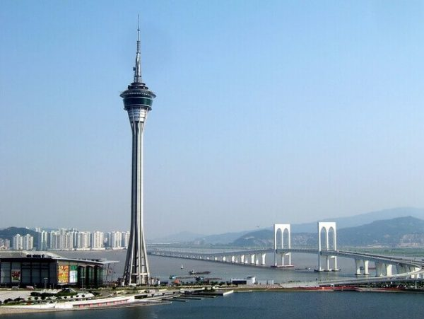
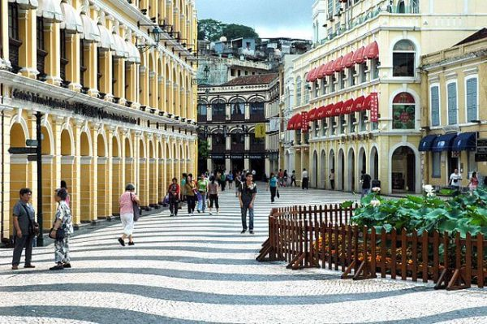
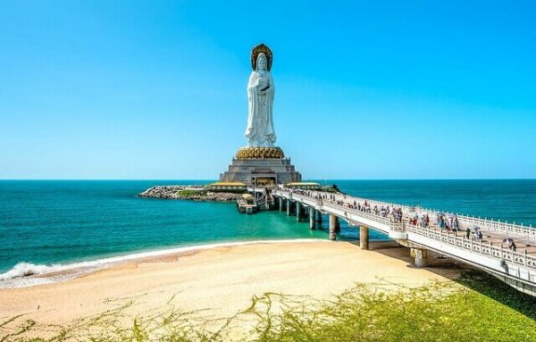

هناك العديد من المعالم الشهيرة في ماكاو كما تتواجد المباني ذات الخصائص الأوروبية، ومن أهم هذه الأماكن الموجودة هناك هى منطقة القديس بولس وأقدم منارة في الساحل الجنوبي ومعبد ليان فنغ والعديد من المباني المحلية المتميزة، وتتميز مدينة ماكاو بكونها تجمع بين مختلف الديانات مثل الديانة الإسلامية والمسيحية والهندوسية وغيرها من الديانات الأخرى التي تعيش مع بعضها البعض في سلام.
أفضل وقت لزيارة البلد
فصل الربيع والخريف
أبرز الأماكن السياحية
يبلغ ارتفاع هذا البرج حوالي 338 برج مكاو الشهير هو من أبراج المراقبة الشهيرة هناك التي يتمكن السائح من خلالها من مشاهدة عدد كبير من الأماكن السياحية هناك كالمسارح والمطاعم وأماكن التسوق بالإضافة إلى أماكن التنزه المميزة، ويُعرف هذا البرج باسم ماكاو سكاي تاور..

مبنى سينادو: هو ميدان قديم وفريد من نوعه يضم عدد كبير من المطاعم ومراكز التسوق ويجذب السياح إليه للاستمتاع بشراء الهدايا التذكارية الفريدة وزيارة المباني الأثرية القديمة، ولكن ننصحك بضرورة ارتداء الملابس المناسبة لآشعة الشمس ودرجة الحرارة المرتفعة وتغطية العينية بالنظارات الشمسية لمنع إصابته بالأضرار المختلفة.

تمثال غوان يين: هو عبارة عن تمثال برونزي رائع يصل طوله إلى 20 قدم تقريبًا وهو يتميز بمظهر الجذاب الذي يشبه الزهور الجميلة، وقد تم بناء هذا التمثال على جزيرة مميزة وصغيرة إلى حد ما، وبالقرب من هذا التمثال نجد بعض الأماكن التي تصلح للتنزه والمشي للتعرف على المكان على الوجه الأمثل.

كيفية الوصول إليها
يمكن الوصول إلى البلد بواسطة الطائرة، السفينة، القطار، أو السيارة اعتمادًا على موقعك الحالي.